OtoVIS is a high-fidelity 3D iOS and Android based ear simulator with specialized otology anatomy and pathology modules for medical education. Designed to meet the Medical Council of Canada (MCC), College of Family Physicians of Canada (CFPC), and the Canadian Society of Otolaryngology–Head & Neck Surgery (CSO–HNS) learning objectives, OtoVIS serves as a mobile, independent resource for general practitioners. Core topics within otology are delivered to enhance diagnostic skills, provide initial treatment plans, and help when a referral to Otolaryngology is required.
 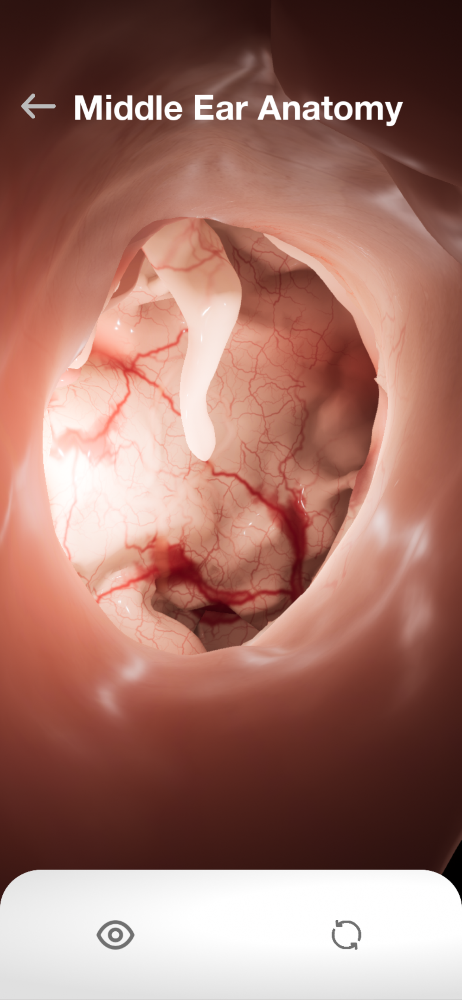
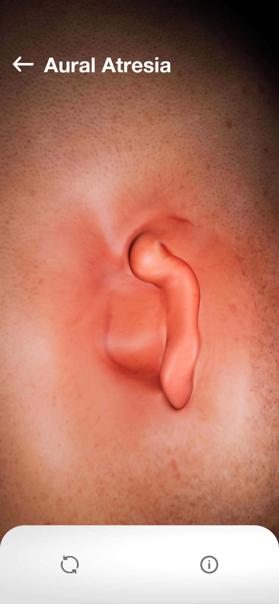
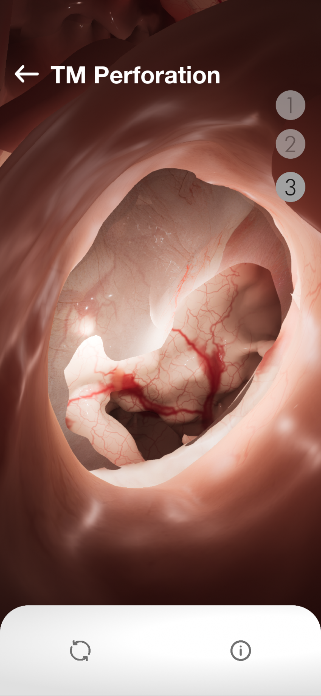
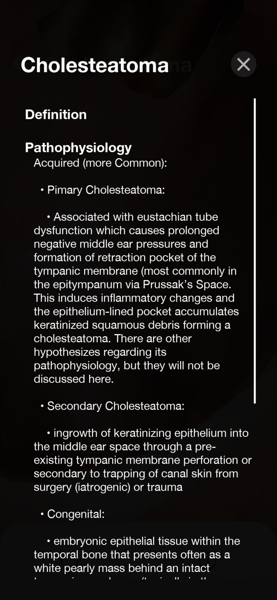
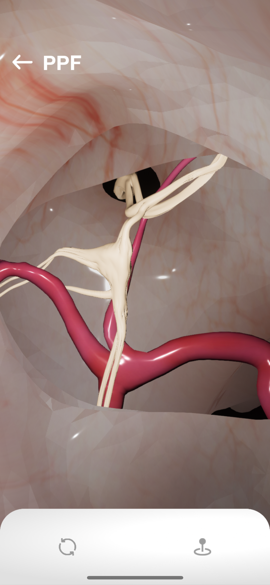
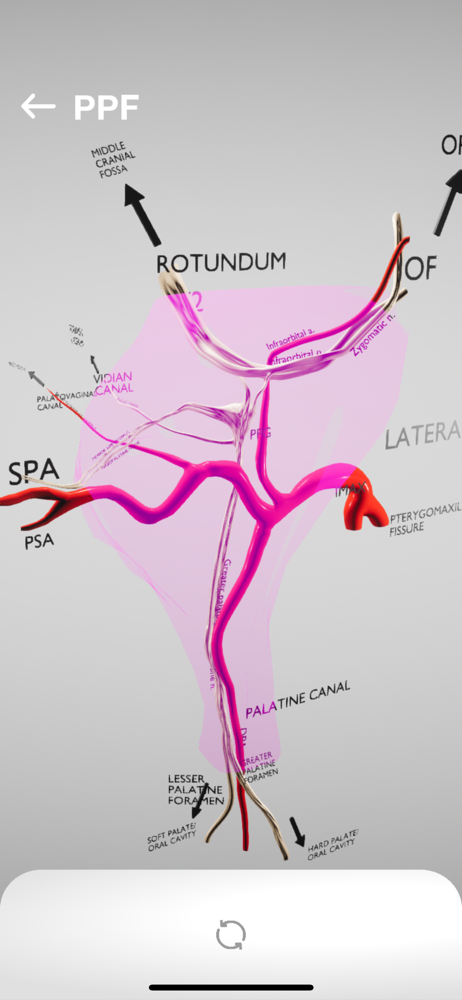
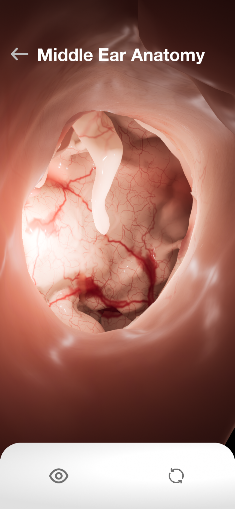
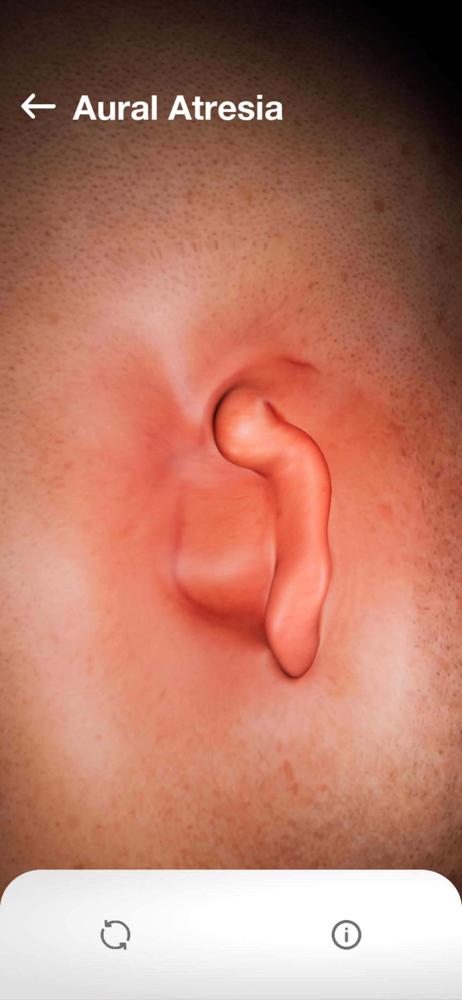
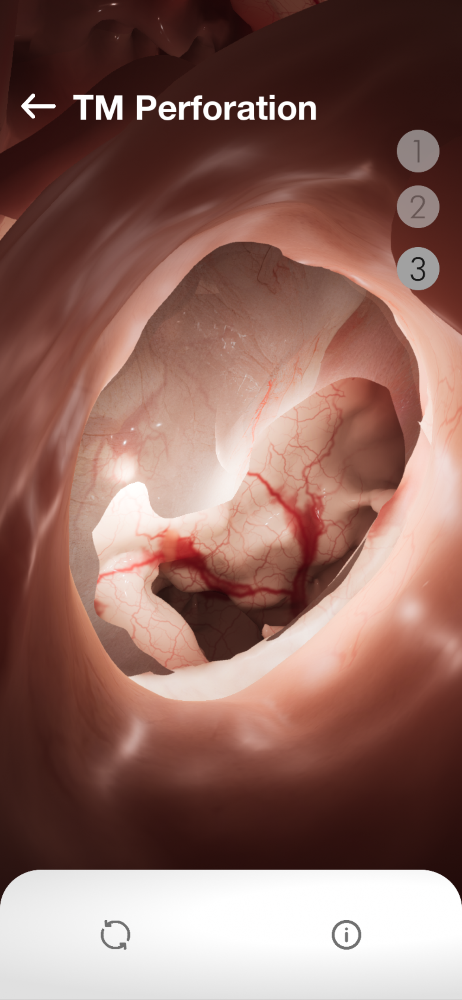
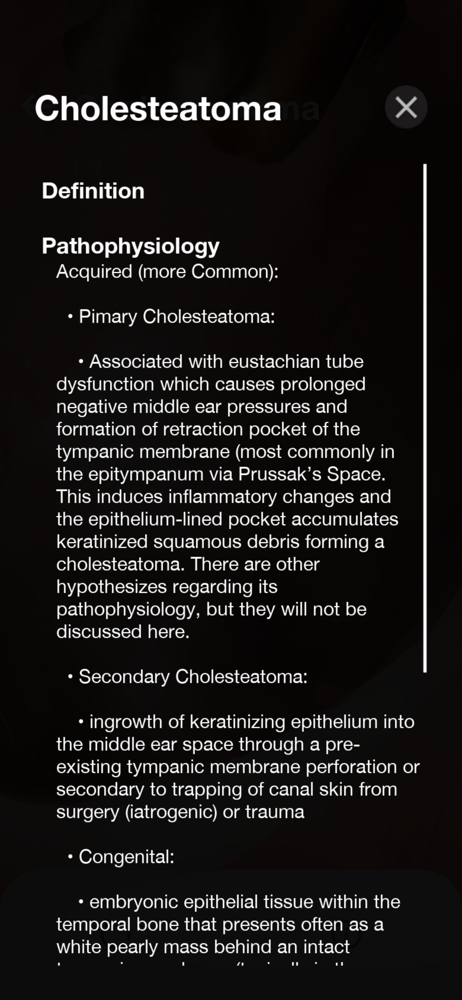
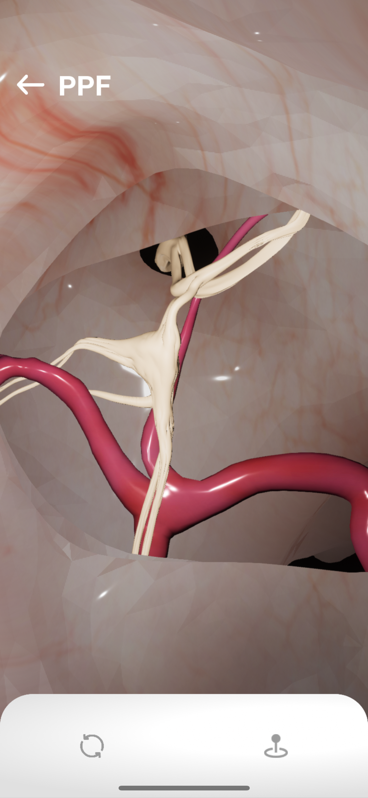
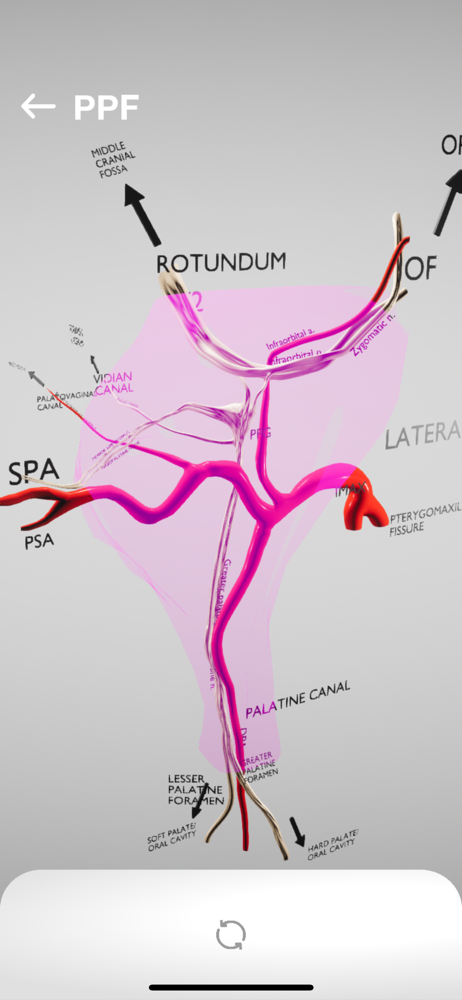